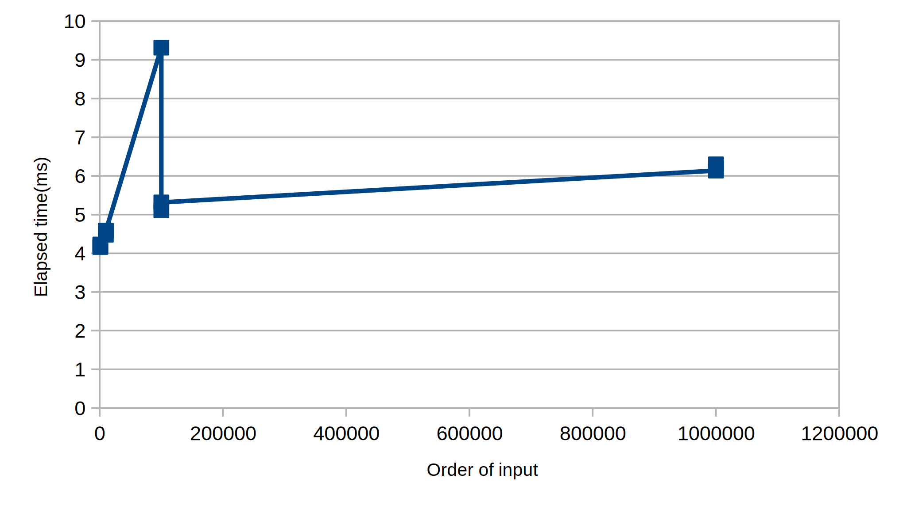

(let [a 3 b (+ a 1)] (doseq [x [10 (+534) (-91) (/ 62) (+ (*24) (-46)) (+ a b (* a b)) (= a b) (if (and (> b a) (< b (* a b))) b a) (cond (= a 4) 6 (= b 4) (+67 a) :else25) (+2 (if (> b a) b a)) (* (cond (> a b) a (< a b) b :else-1) (+ a 1))]] (println x)))
(defnA [x y] (cond (= y 0) 0 (= x 0) (*2 y) (= y 1) 2 :else (A (- x 1) (A x (- y 1)))))
(doseq [v [[110] [24] [33]]] (println (apply A v)))
(defnf "Calculate 2 * n" [n] (A0 n))
(defng "Calculate 2 ^ n" [n] (A1 n))
(defnh "Calculate 2 ^ 2 ^ 2 ^ 2 ^ 2 ... ^ 2 (there are n 2's in total)" [n] (A2 n))
(println (f3) (g3) (h3))
Exercise 1.11
1 2 3 4 5
(defnf ([n] (if (< n 3) n (f (- n 2) 210))) ([n a b c] (if (= n 0) a (recur (- n 1) (+ a (*2 b) (*3 c)) a b))))
(println (f5))
Exercise 1.12
1 2 3 4 5 6 7 8 9 10 11
(defnpascal-triangle ([n] (pascal-triangle n [[1]])) ([n l] (if (=1 n) l (recur (- n 1) (conj l (vec (map + (conj (last l) 0) (cons0 (last l)))))))))
(prn (pascal-triangle5))
Exercise 1.13
∣Fib(n)−5ϕn∣=5ψn<5ψ<21,□.
(To be continued …)
Exerciese 1.14
Graph
graph TD
A{"f(11, 5)"} --> B("f(-39, 5)")
A --> C{"f(11, 4)"}
C --> D("f(-14, 4)")
C --> E{"f(11, 3)"}
E --> F{"f(1, 3)"}
E --> G{"f(11, 2)"}
F --> H("f(-9, 3)")
F --> I{"f(1, 2)"}
G --> J{"f(6, 2)"}
G --> K{"f{11,1}"}
I --> L("f(-4, 2)")
I --> M{"f(1, 1)"}
M --> N("f(0, 1)")
style N fill:#4caf50
M --> O("f(1, 0)")
J --> I
K --> P{"f(10, 1)"}
K --> Q("f(11, 0)")
P --> R{"f(9, 1)"}
P --> S("f(10, 0)")
R --> T{"f(8, 1)"}
R --> U("f(9, 0)")
T --> V{"f(7, 1)"}
T --> W("f(8, 0)")
V --> X{"f(6, 1)"}
J --> X
V --> Y("f(7, 0)")
X --> Z{"f(5, 1)"}
X --> AA("f(6, 0)")
Z --> AB{"f(4, 1)"}
Z --> AC("f(5, 0)")
AB --> AD{"f(3, 1)"}
AB --> AE("f(4, 0)")
AD --> AF{"f(2, 1)"}
AD --> AG("f(3, 0)")
AF --> M
AF --> AH("f(2, 0)")
Space complexity
It’s easy to observe the space complexity is O(max{m,n}).
Time complexity
Let’s suppose n be the money to be changed, m be the count of type of coins, Vm be the denomination of the coin of mth type.
For m = 5, there there is a closer estimate, implying that this algorithm has a time complexity of Θ(n5) in codology.net.
Optimization on time complexity
If you examine the “tree” given before, you’ll realize that it’s actually not a tree. It’s a topological graph.
In the original tree, there is a lot of repeating tree nodes, calculating the same value of the recursive function.
If we save the value of every calculated function, the time complexity will be O(nm) , since there are only n×m states in total.
For Clojure, using memoize will simply complete the job for you.
However, the space complexity will fall to O(n×m) , but usally the optimization as a whole is a great deal.
This kind of way of solving problems are actually Dynamic programming. Notice: This kind of optimization only works for referentially transparent functions, that is, the function’s output only relates to its input.
Exercise 1.15
a)
Solve the inequality ∣3nθ∣≤0.1(θ=12.15) yields nmin=5 .
(defnfast-mul ([a b] (fast-mul a b 0N)) ; a * b + cur = constant ([a b cur] (cond (= b 0) cur (even? b) (recur (_double a) (_half b) cur) :else (recur a (- b 1) (+ cur a)))))
This is an application of Exponentiation by squaring.
Let A be a 2×2 matrix, s.t.A×[ba]=[bp+aqbq+aq+ap]We have A=[pqqp+q]A2=[p2+q22pq+q22pq+q2p2+2pq+2q2]p′=p2+q2,q′=2pq+q2
1 2 3 4 5 6 7 8 9 10 11 12 13 14 15
(defnfib ([n] (fib1N 0N 0N 1N n)) ([a b p q cnt] (cond (= cnt 0) b (even? cnt) (recur a b (+ (* p p) (* q q)) (+ (* q q) (*2 p q)) (/ cnt 2)) :else (recur (+ (* b q) (* a q) (* a p)) (+ (* b p) (* a q)) p q (- cnt 1)))))
(fib10000)
Exercise 1.20
Applicative order evaluation, applying the mod operation for 4 times.
(defnexpmod "Calculate a^b%p" [a b p] (cond (=0 b) 1 (even? b) (let [h (expmod a (/ b 2) p)] (rem (* h h) p)) :else (rem (* a (expmod a (- b 1) p)) p)))
(defnfermat-test [n] (let [rnd (bigint (+1 (rand (- n 1))))] (= (expmod rnd n n) rnd)))
(defnfast-prime? [x times] (cond (=0 times) true (fermat-test x) (recur x (- times 1)) :elsefalse)) (fast-prime?10000000071000) (doseq [x [100910131019100071000910037100003100019100043100000310000331000037]] (time (fast-prime? x 1000)))

This nearly consistents with my guess that the time consumed is proportional to the order of the magnitude of the input.
However a strange point does not consist with my guess.
Exercise 1.25
She is wrong. The memory is limited, so there’s no point to store a huge number.
If we compute exponentials then take remainders, it may overflow in many cases.
On the contrary, taking remainders after every time we do a multiplication will reduce the probability of math overflow.
(defnexpmod "Calculate a^b%p" [a b p] (cond (=0 b) 1 (even? b) (let [h (expmod a (/ b 2) p)] (rem (* h h) p)) :else (rem (* a (expmod a (- b 1) p)) p)))
(defnexpmod "Calculate a^b%p" [a b p] (cond (=0 b) 1 (even? b) (let [h (expmod a (/ b 2) p) sq (rem (* h h) p)] (if (and (= sq 1) (not= h 1) (not= h (- p 1))) 0 sq)) :else (rem (* a (expmod a (- b 1) p)) p)))
(defnmiller-rabin [n] (let [rnd (bigint (+1 (rand (- n 1))))] (not= (expmod rnd n n) 0)))
(defnfast-prime? [x times] (cond (=0 times) true (miller-rabin x) (recur x (- times 1)) :elsefalse))
(defnintegral [f a b dx] (* dx (sum (map f (range a (+ b dx) dx)))))
(defnsimpson [f a b n] (let [h (/ (- b a) n) h2 (+ h h)] (* (/ h 3) (+ (f a) (f b) (*2 (sum (map f (range (+ a h2) (- b h) h2)))) (*4 (sum (map f (range (+ a h) b h2))))))))
(defnsum [term a next b] ; avoid using 0 since the function might work not only for numbers (defniter [x result] (if (= x b) (term b) (recur (next x) (+ (term x) result)))) (iter (next a) (term a)))
Exercise 1.31
a)
1 2 3 4 5 6 7 8 9
(defnproduct [term a next b] (if (= a b) (term a) (* (term a) (product term (next a) next b))))
(defnproduct ([term a next b] (product term (next a) next b (term a))) ([term a next b result] (if (> a b) result (recur term (next a) next b (* (term a) result)))))
Exercise 1.32
Actually, accumulate is the function reduce implemented in Clojure.
There is a difference, that is accumulate is right-fold while reduce is left-fold.
(defnaccumulate [combiner null-value term a next b] (if (= a b) (combiner null-value (term a)) (recur combiner (combiner null-value (term a)) term (next a) next b)))
(defnsum [term a next b] (accumulate + 0 term a next b))
(defnproduct [term a next b] (accumulate * 1 term a next b))
b)
1 2 3
(defnaccumulate [combiner null-value term a next b] (if (= a b) (combiner null-value (term a)) (combiner a (accumulate combiner null-value term (next a) next b))))
Exercise 1.33
1 2 3 4 5 6 7 8 9 10 11 12
(defnfiltered-accumulate [combiner null-value term a next b predicate] (if (= a b) (if (predicate a) (combiner null-value a) null-value) (if (predicate a) (recur combiner (combiner null-value (term a)) term (next a) next b predicate) (recur combiner null-value term (next a) next b predicate))))
Average-damping improve the performance of the fixed-point function, if the applying multiple times f on some x results in the output keeping taking turns.
That property doesn’t hold for every function.
Exercise 1.37
1 2 3 4 5 6 7 8 9 10
(defncont-frac ([n d k] (cont-frac n d k 0)) ([n d k result] (if (= k 0) result (recur n d (- k 1) (/ (n k) (+ result (d k)))))))